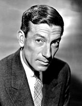

Background History
 Ian Fleming, creator of the fictional James Bond
James Bond is a fictional character created by author Ian Fleming. Starring in Ian Fleming's 12 books and 25 movies,
James Bond continues to be represented in the film series for over 58 years. The author got his inspiration on the creation
of James Bond from a compound of all the secret agents and commando types I met during the war.
The iconic name was
not just a made up name, but rather an inspiration from the American ornitholigst (studies birds), James Bond.
The Secret Agent
007, James Bond's code number, is a spy working in the Secret Intelligence Service (MI6). Formally a Royal Naval Reserve Commander,